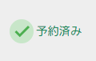

ある方は悩んでいました。
Aさん「うーん、中古車たくさんの人に見てもらいたいし、来店数も増やしたい。」
Bさん「サブスクにお金を使いたくない。でも、TV番組も見逃したくない。」
カーセンサー風 中古車販売サイト
使用言語
PHPversion 8.2
フレームワーク
WordPressversion 7.0
データベース
MySQLversion 8.4
GitHubへ遷移
以下は、トップページです。スクロールしていくと、、、

さらにスクロールしていくと、、、

さらに、、、

申し訳ありません！以降、手を抜いています。
見て頂きたかったのは、上記２つのコンテンツです。これは、この後紹介する管理者画面で投稿するだけで、自動的にトップページへ反映されます。フォーム入力と画像選択を直感的に操作でき、とても簡単です。スクロールを進めていってください。

ログイン完了後、以下の管理者画面が開きます。ぱっと見、項目が多く不安になる方もいらっしゃるかもしれません。そういった方は事前に教えてくださいね。対策をします。 今回の中古車販売サイトを例でいうと、使う項目は赤枠内の二つです。”中古車を追加”をクリックすると、、、


以下のようなフォーム入力画面が開きます。
スクロールしていくと画像選択ボタンがあるので、クリックして頂くと自身のエクスプローラが起動します。必須項目を入力して、画面右側にある赤枠内の”公開”をクリックすれば完了です。


編集や、削除も可能です。数が多くなる場合には、検索機能やページネーションを加える事でユーザビリティが向上します。 News（お知らせ）も、使い方は同じ要領です。例えば、ご来店時（サイト記載のキーワード提示頂ければ）ドリンク一杯無料と促し、店内では売上アップに繋がる催しを施しておく。なんていう使い方も想像できます。

車両をクリックすると、詳細画面が開きます。現物が見たいとなった時にすぐ連絡先が分かるような構成をとりました。写真の撮り方等、ここで購買意欲を沸かせるアプローチをしたい所です。ちなみに取扱店舗は架空のものです。

さて、冒頭でのAさんの悩みは解決したでしょうか？
いえ、サーバに乗せなければ何も始まりません。えっと、chown、、、?
ワッツ?の状態であったインフラ未経験の私が、レンタルサーバやVPSで公開できるまでになりました。半端ではない難しさで、今でも自身がフリーズする場面はよくあります。しかし、学習を続けていく中で ” 学び ” の大切さが芽生えていきます。（遅）
そんな初学者の私が、Bさんの悩み解決に向けて挑みます。続きを読んで頂けると嬉しいです。
日本放送協会(NHK) 予約通知アプリ
▲▲ 現在作成中 ▲▲
使用言語
PHPversion 8.2
フレームワーク
Laravelversion 10.50
データベース
MySQLversion 8.0
GitHubへ遷移
NHK番組表API | portalへ遷移
仕様はシンプルです。ユーザーが予約したい番組を選び、（選択肢の中から）通知時間を指定するというもの。
なぜ、NHKなのかは置いておいて、一番先に考えたのは、
右の画像のようにユーザーへ視覚的に知らるためのアプロ
ーチでした。未然に間違い等も防げます。これを実現させ
るためにNHKさんが公開しているWebAPIを利用しました。
少し専門的な話になりますが、テーブル設計の段階で、番
組に紐つくプロパティを特定しておく必要がありました。
ここの部分においては、後半で説明したいと思います。こ
のプロパティの特定は、ひいてはアプリとして機能するか否
かを決めるくらい、とても重要でした。実際にコーディン
グより、はるかに時間を費やし、挙句の果てには特定でき
ませんでした。NHKさんのホームページにWebAPIについて、
問い合わせできるフォームがありましたので、そこから問
い合わせました。２日後、返信が届きました。丁寧な説明
でとても分かりやすく、開発に向けてモチベーションがV
字回復したのを覚えています。あの時、対応してくださっ
た方、本当にありがとうございました！


前置きが長くなってしまいました。以下はログイン後の画面です。認証受けないと”予約ボタン”は表示されない仕様です。日付（向こう１週間まで）と地域を選択し、”番組表を見る”をクリックすると、番組表が展開されます。次に予約のプロセスをみていきます。

実際に予約可能な時刻までスクロールし、以下の操作で予約完了です。初学者なりに考慮した点は、ユーザーが誤操作を起こさないよう操作対象を極力減らした所や、確認画面を挟んだ所です。しかし、こうして振り返ると、開始時間に西暦と日付が入っていなかったり、直すところは結構ありそうです。
”予約ボタン”をクリック →
通知時間の指定をし”確認画面へ”をクリック
→
”予約する”をクリック




最後に、サーバ側でcron設定が必要になります。５分毎、または10分毎でスケジューラが実行されるようにすれば、通知時間にメールが飛んできます。ポイントは、ユーザーのフォーム操作によって振る舞いが変わる所です。例えば、番組表を展開する前に、日付と地域を選びます。それによって、展開される番組内容は変わります。もう一つ例として、上記赤枠内を予約しました。赤枠の一つ上の行の”予約ボタン”をクリックしたとしましょう。すると、予約設定画面では、上の行の内容が反映されています。これが実現出来ているのは、もちろんWebAPIのおかげなのですが、こういった振る舞いを作るというのがプログラミングの難しさでもあり、楽しい所でもあります。
アプリとしてはこれで完成です。Bさんの悩みが解決する事を願っています。ここからは、”前回予約済”や、”今回予約済”機能を入れる所について触れたいと思います。途中、”番組に紐つくプロパティを特定しておく必要があります。”と言いました。これが、どうゆう役割を果たすのか、見ていきます。ここで番組に紐つくプロパティを整理しておきます(以降、IDと呼んでいきます)。ここから、プログラミングやAPIが分からない方は難しく思われるかもしれませんが、一生懸命説明するので、付いてきて頂けると嬉しいです。
欲しいIDというのは一意である必要があり、絶対に重複してはいけません。NHKさんのWebAPIは毎朝5時に更新されます。当然ながら、更新の度にIDは変わってはいけません。ばけばけや、キングダムのようなシリーズ物は回が変わっても、IDは同じである必要があります。これらの条件を満たすID、候補は絞れてきますが私はキャパオーバーしました💦
OK
- 欲しいID
- kd123456
- タイトル
- キングダム第6シリーズ
- サブタイトル
- 11話 必殺の別働隊
- 欲しいID
- kd123456
- タイトル
- キングダム第6シリーズ
- サブタイトル
- 12話 格不足
NG
- 欲しいID
- kd123456
- タイトル
- キングダム第6シリーズ
- サブタイトル
- 11話 必殺の別働隊
- 欲しいID
- kd123789
- タイトル
- キングダム第6シリーズ
- サブタイトル
- 12話 格不足
API(Application Programming Interface)とは、企業様や個人の方が提供してくださるプログラムで、主にJson形式でデータのやりとりをします。（ここは、今回伝えたい所とは、やや異なるのでさらっといきます）有料、無料とあり、世の中には様々なWebAPIが存在します。サイトやアプリをよりリッチにするために、開発者は使わせて頂く立場になります。
さて、欲しいIDが分かった所で、次はWebAPIの中身を見ていきましょう。” : ”を境に左側のキー（key）に対し、右側に値（value）が振られており、プロパティが30ほど連なっています。目を凝らしてください。見るとブロック、一つの塊に見えてきませんか？この一つの塊が番組表でいう、ひとつのコマ（行）になっている。とすると、イメージできるでしょうか。これが、番組の数×7日分あるというわけです。
ブロックが変われば、タイトルも変わる想定でいましたが、私が作業した日のWebAPIでは上記タイトル３つとも同じでした。かえって、ややこしくしていたら申し訳ありません。放送日時とサブタイトルで変わっていくのが分かるかと思います。そして、" 欲しいID " に注目しておいてください。
ここからが本番です。一気に行きます。ユーザーが予約をした事により、その予約（ブロック）を全て持つ事になります。そして、アプリ側のプログラムでは、番組表のひとコマごとに対し、if文（条件分岐）をかましています。”あなた（番組表のブロック）の持っている欲しいIDと、私（ユーザー）が持っている欲しいIDは一致していますか？”と。一致してればと書きたい所ですが、これでは再放送にも反応してしまいます。プログラムの演算では、”且つ ～ ”と続けて書く事で、両方の条件に一致していたら、と条件提示できます。整理すると、
’あなた（番組表のブロック）の持っている欲しいIDと、私（ユーザー）が持っている欲しいID’ 且つ ”あなた（番組表のブロック）の持っている放送日時のスタート時間と、私（ユーザー）が持っている放送日時のスタート時間” は一致していますか？と、ここで西暦と日付が比較に含まれていないのがポイントです。後ほど説明します。" == "は左右を比較しています。スタート時間というのは、放送日時の値である文字列の中から、スタート時間だけを切り取って使っています。実際に以下のように記載すると、何となくイメージ出来るでしょうか。
そして、この二つの条件を満たしていれば、trueの処理。ここで、”前回予約済”機能を書きます。ここの条件で西暦と日付を入れなかった理由としては、このWebAPIは毎朝5時に更新されます。日付ごと比較してしまうと、翌週の ”あなた（番組表のブロック）の持っている放送日時は最新のデータで、私（ユーザー）が持っている放送日時は1週間前のデータのため、日付が違うため一致せず、意図した処理が書けなくなってしまうからです。
続いて、”今回予約済”機能を入れていきます。これは今まさに予約したものです。さきほど（5行目くらい上）の条件式がありますが、そこへさらにif文（条件分岐）をかまします。ここのif文では、放送日時の西暦と日付を比較させます。意味としては、以下のようになります。
こうする事で、 ”あなた（番組表のブロック）の持っている放送日時は最新のデータで、私（ユーザー）が持っている放送日時も最新であるため、trueの処理が入り、つまりは”今回予約済”機能が書けるわけです。予約をして予約ボタンが表示されているのも不自然なので、ここのtrueの処理では予約ボタンは非表示に切り替わります。
番組に紐つくプロパティの設計から見てきました。この役割の重要性が伝わったでしょうか。同時に、私の苦労も伝わったのかなと思っています。もし、プログラミング分からない方が最後まで読んで頂いたとしたら、考える楽しさが少しでも伝われば嬉しく思います。次は、Cさんの悩みを探しにいきます、最後まで読んで頂きありがとうございました。